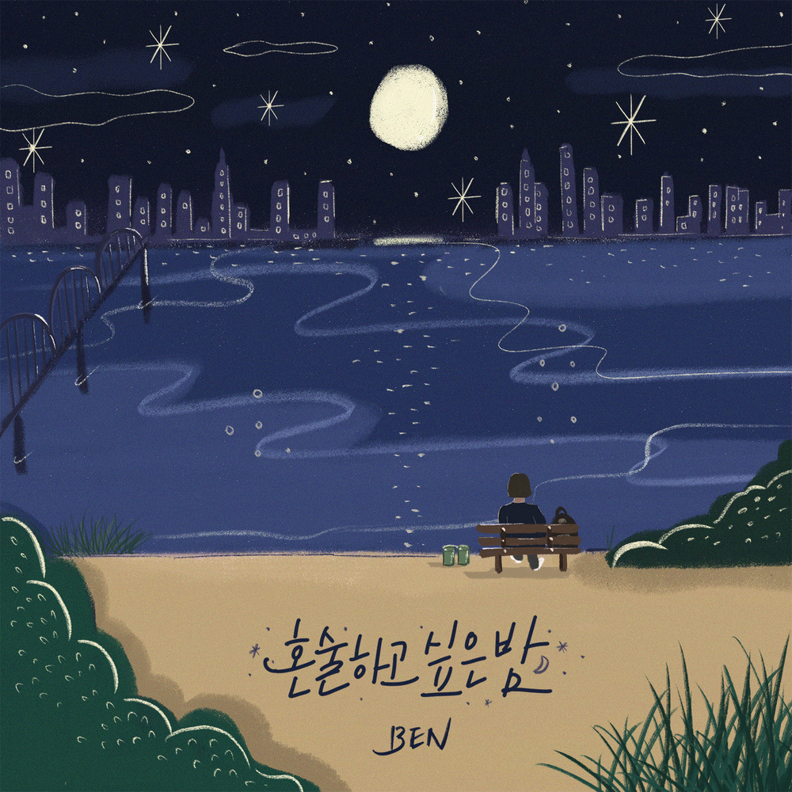

안녕하세요, 라보엠입니다.
오늘은 겨울이 올 때마다 플레이리스트에서 자연스럽게 찾게 되는 곡, 벤(BEN)의 ‘눈사람’을 소개합니다. 2020년 12월 2일 공개된 디지털 싱글 《혼술하고 싶은 밤》 수록곡으로, 차가운 계절 한가운데에서 여전히 얼어 있는 사랑과 그리움을 섬세하게 담아낸 발라드입니다.

앨범과 곡의 정보
‘눈사람’은 싱글 《혼술하고 싶은 밤》에 함께 실린 곡으로, 제목처럼 겨울 밤 혼자 마주하는 감정들을 담아낸 앨범의 정서를 이어갑니다. 장르는 정통 발라드이며, 작사·작곡은 VIP가 맡아 벤 특유의 애잔한 감성을 극대화했습니다. 따뜻한 색감의 기타 사운드는 싱어송라이터 적재가 연주에 참여해 겨울밤에 어울리는 포근한 질감을 더했습니다.
눈과 사랑, 얼어붙은 마음의 이미지
노래는 “새하얀 눈 위에 그대의 발자국을 따라 피어난 얼음꽃이 너에게 닿을까 한 송이 한 송이”라는 장면으로 시작합니다. 첫눈이 내린 길 위, 사랑했던 사람의 발자국을 뒤따라 걷는 화자의 모습이 눈앞에 그려지죠. 곧이어 “그대 내리는 계절, 그 겨울 나의 사랑은 꽁꽁 얼어붙어 있는 걸”이라는 구절에서는 이미 끝난 사랑을 여전히 그 자리에서 붙잡고 있는 마음이 드러납니다.
이 곡의 가사는 끝내 녹지 않는 사랑을 ‘눈사람’과 ‘얼음꽃’에 빗대 표현합니다. 따뜻한 햇살과 바람이 다가와도 “날 녹여내려 애를 쓰지 마”라고 말하는 대목은, 계절이 바뀌어도 쉽게 놓지 못하는 미련과 고집스럽게 남겨둔 사랑을 보여줍니다. 이별 뒤 흘러가는 시간 속에서도 스스로를 그 겨울에 묶어두는 사람의 마음이 잔잔하게 전해집니다.
펑펑 내리는 눈, 그리고 눈물
후렴으로 갈수록 감정은 더 깊어집니다.
“그 겨울 내리던 눈처럼 난 펑펑 쏟아지는 눈물에 그리운 사랑이, 그 좋은 추억이 모두 녹아버릴지도 몰라”
내리는 눈과 쏟아지는 눈물, 그리고 그 속에 함께 녹아내릴지 모를 추억이 겹쳐지면서 이별의 고통과 미련을 섬세하게 건드립니다.
“첫눈과 첫 만남, 첫인사, 설레던 첫 입맞춤, 난 그리워요 모두 그대의 기억이”라는 가사는 사랑의 ‘처음’을 장면 하나하나 다시 꺼내 보며 여전히 그 시간에 머물러 있는 화자의 마음을 보여줍니다. 한 걸음씩 멀어져 가는 계절을 바라보면서도, “그 겨울 나의 사랑은 꽁꽁 얼어붙어 있는 걸”이라는 반복은 아직 끝내지 못한 감정의 고백처럼 들립니다.
겨울밤에 어울리는 사운드와 벤의 보컬
‘눈사람’의 편곡은 화려하기보다는 여백이 살아 있는 스타일입니다. 피아노와 스트링, 기타가 조용히 받쳐주고, 벤의 목소리가 그 위를 천천히 걸어갑니다. 고음을 강하게 밀어붙이기보다는 호흡과 떨림을 살려 부드럽게 올라가는 보컬이 특징이라, 마치 혼잣말을 듣는 듯한 느낌을 줍니다. 그래서 이 곡은 겨울 새벽, 하루를 마무리하며 혼자 듣기 좋은 노래로 자주 언급됩니다.
마지막 부분의 “다시 봄이 와 다 녹아 나의 모습이 너에겐 형편없을지는 몰라도 여전히 나는 그대로야, 그때 그대로야, 변하지 않는 이 계절처럼”이라는 가사는, 계절은 바뀌어도 내 안에서 겨울은 여전히 그 사람과 함께였던 시간으로 남아 있음을 고백합니다. “또 한 번 이 계절이 녹아 내 사랑이 녹아 사라져가도 나는 괜찮아, 다시 그 겨울은 돌아오니까”라는 결말은, 사랑이 여러 번 녹고 사라져도 결국 겨울이 돌아오듯 다시 그 사람을 떠올릴 자신을 받아들이는 태도를 담고 있습니다.
벤 ‘눈사람’과 정승환 ‘눈사람’ 비교
[지금이노래] 정승환 겨울 노래 눈사람 가사 뮤비 장소
안녕하세요 라보엠입니다.겨울은 좋은 노래들이 참 많죠. 겨울 노래를 많이 부른 가수가 있습니다. 목소리도 잘 어울리구요. 오늘은 정승환의 겨울 노래 눈사람을 소개해드리겠습니다. ☃️ 정
umm.la-bohe.me
겨울 발라드 하면 함께 떠오르는 곡이 정승환의 ‘눈사람’이 아닐까요? 두 곡을 함께 들어보면 감정선의 차이가 더 선명하게 느껴집니다.
둘 다 겨울과 이별을 배경으로, 지나간 사랑을 떠올리며 현재의 마음을 고백하는 발라드입니다. 눈과 계절의 이미지를 통해 직접적인 표현 대신 비유로 감정을 풀어낸다는 점에서도 닮아 있습니다.
맺음말
벤 ‘눈사람’은 이미 끝난 사랑을 여전히 붙잡고 있는 사람의 시선을 그린 곡입니다. “그 겨울 나의 사랑은 꽁꽁 얼어붙어 있는 걸”처럼 녹지 않으려는 마음, 미련과 고집이 중심에 있습니다. 정승환 ‘눈사람’은 2018년 정규 1집 [그리고 봄]의 선공개곡으로, 아이유가 작사한 가사 속에서 떠나보내는 쪽이 상대의 행복을 빌어주는 이야기를 들려줍니다. “꽃잎이 번지면 당신께도 새로운 봄이 오겠죠, 그대 반드시 행복해지세요”처럼 결국 상대의 봄을 응원하는 노래에 가깝습니다. 벤의 ‘눈사람’이 “나는 여전히 그 겨울에 머물러 있는 사람의 노래”라면, 정승환의 ‘눈사람’은 “그 겨울을 보내주며 당신의 봄을 빌어주는 사람의 노래”에 가깝다고 할 수 있습니다. 두 곡을 연달아 듣다 보면, 붙잡고 있던 겨울이 조금씩 봄을 향해 나아가는 작은 서사처럼 느껴질지도 모릅니다.
오늘 밤, 겨울의 공기가 조금 더 차갑게 느껴진다면, 벤의 ‘눈사람’으로 얼어붙은 마음을 먼저 마주하고, 정승환의 ‘눈사람’으로 조심스레 봄을 예감해 보는 건 어떨까요.